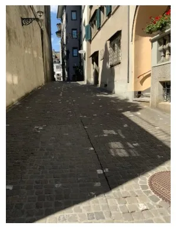
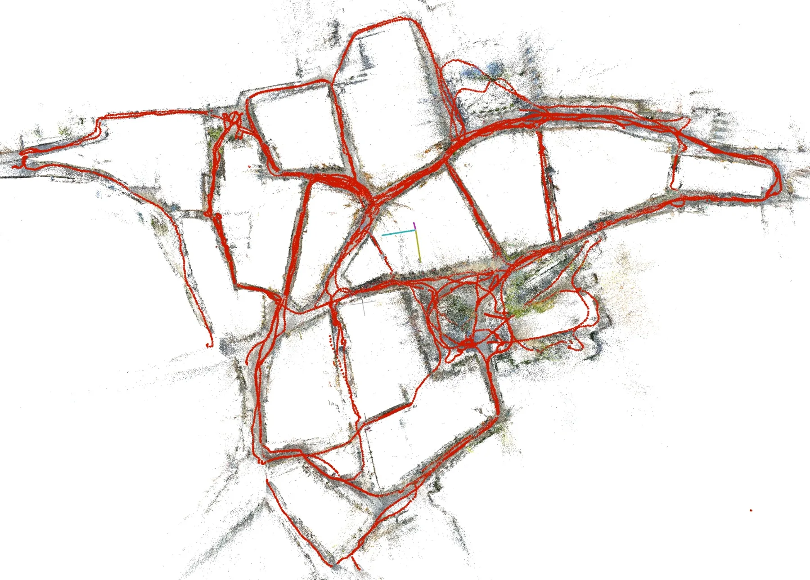
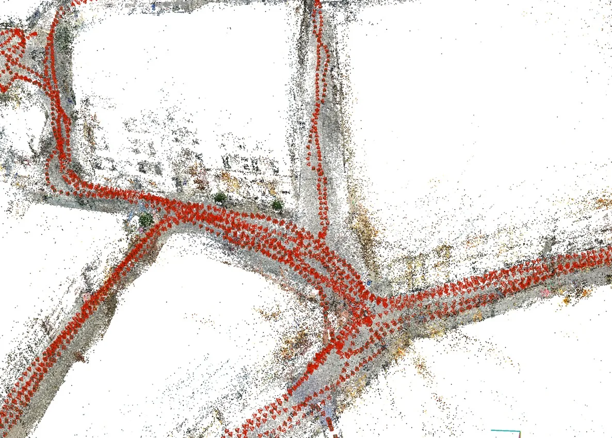

Global Structure-from-Motion Meets Feedforward Reconstruction
摘要
Structure-from-Motion -- the process of simultaneously estimating camera poses and 3D scene structure from a collection of images -- remains a central challenge in computer vision, with many open problems yet to be solved. Recent advances in feedforward 3D reconstruction have made significant strides in overcoming persistent failure cases of classical SfM methods, particularly in scenarios characterized by low texture, limited overlap, and symmetries. However, while feedforward approaches excel in these challenging conditions, they often face limitations regarding scalability, accuracy, or robustness, and typically fall short of classical methods in standard reconstruction settings. In this work, we systematically analyze these limitations and propose a new Structure-from-Motion pipeline by combining the respective strengths of classical and feedforward methods. Extensive experiments across multiple datasets show the benefits of our approach, achieving state-of-the-art results across a wide range of scenarios. We share our system as an open-source implementation at https://github.com/colmap/gluemap.
中文解读摘录
- 日期：2026-05-26
- 链接：abs / PDF；代码：colmap/gluemap
- 作者简写：L. Pan, J. Schönberger, M. Pollefeys
- 标签：三维重建 / SfM / feed-forward reconstruction / COLMAP
- 背景/动机：经典 SfM 在纹理少、重叠小、重复/对称结构中容易失败；前馈重建在这些困难条件下有优势，但在大规模、精度和常规场景鲁棒性上仍不如经典几何管线。
- 主要创新点/工作：系统分析前馈 3D 重建的限制，并把经典 global SfM 与前馈重建的强项组合成新的 SfM pipeline；在多数据集上报告更宽场景范围的 SOTA 结果。
- 为什么值得关注：这是 COLMAP 系作者参与、CVPR 2026 Highlight 的“经典几何 + 学习式前馈”融合路线，可能成为下一代通用 SfM/重建系统的重要基线，也适合作为 SLAM 后端初始化和回环重建模块参考。
图表/页面预览

{kind=link}
{kind=link}
{kind=link}

{kind=link}

{kind=link}
